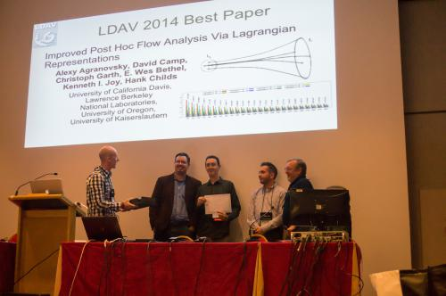

|
Filter based on:
[Student Successes]
[Awards and Recognition]
[Funding]
[Outreach and Leadership]
[Personnel]
[All News]
Note: we are behind on getting the website updated for 2021. Many good happenings, including 8 publications and 3 Best Paper awards. June 14, 2021
CDUX Students Present Three Papers at EGPGV, Including Best Paper and Best Short Paper
Congratulations to Sudhanshu Sane and Roba Binyahib for each receiving awards
at the EuroGraphics Parallel Graphics and Visualization Symposium (EGPGV) today.
Sudhanshu's work received Best Paper, while Roba's work received Best Short Paper.
Additionally, Sam Schwartz presented his work, for a total of three CDUX papers at EGPGV:
September 15, 2020
Hank Childs Promoted to Full Professor
Hank Childs has been promoted to the rank of Full Professor.
This promotion is based on his performance since being promoted to Associate
Professor in September 2015.
During this time,
Hank averaged publishing ten papers per year (85% of which were
first-authored by a CDUX student),
advised fourteen completed theses (seven Ph.D., four M.S., and three B.S.),
served as Director of Graduate Studies, and
organized Dagstuhl and Shonan workshops, among other activities.
June 15, 2020
Abhishek Yenpure Awarded J. Donald Hubbard Family Scholarship
Congratulations to Abhishek Yenpure, who has received the J. Donald Hubbard Family Scholarship.
This scholarship is awarded to students who show an interest in human-computer interaction, computer graphics, or multimedia.
Congratulations Abhishek!!
March 30, 2020
Sudhanshu Sane Delivers Data Visualization Course Via Moursund Scholarship
Sudhanshu Sane began delivering his data visualization course today for computer science undergraduates at the
University of Oregon.
He is being supported by the Moursund Graduate Scholarship.
Sudhanshu has designed the course from scratch, and is the instructor of record for this course.
October 21, 2019
Roba Binyahib Receives Best Paper Honorable Mention at LDAV
Congratulations to CDUX Ph.D. student Roba Binyahib for winning a
Best Paper Honorable Mention today for her paper
A Lifeline-Based Approach for Work Requesting and Parallel Particle Advection.
The paper appeared at the IEEE Large Data Analysis and Visualization (LDAV) Symposium in Vancouver, Canada.
Co-authors included David Pugmire, Boyana Norris, and Hank Childs.
The work bridges results from the HPC community into the visualization
community, specifically in a new work requesting method for particle
advection that uses the recent Lifeline approach for identifying victims.
July 15, 2019
Sudhanshu Sane Awarded Moursund Graduate Scholarship
Congratulations to Sudhanshu Sane, who has received the inaugural Moursund Graduate Scholarship.
This scholarship supports future educators.
In addition to financial support from the scholarship, Sudhanshu will receive support from the CIS Department to teach a course
of his own design.
His scholarship application proposed a course focusing on data visualization, which Sudhanshu will deliver in Spring 2020.
Congratulations Sudhanshu!!
June 17, 2019
Hank Childs Receives Teaching Award
Hank Childs has received the CIS Department's Best Teacher Award for 2019.
The award was chosen based on student nominations from this year's
graduating class, and was presented at today's commencement ceremony.
This is the fourth time in five years that Hank has received the Best Teacher Award.
June 12, 2019
Laura Queen Receives Robert D. Clark Award
Laura Queen received an award
from UO's Clark Honors College (CHC),
indicating that she produced one of CHC's very top theses this year.
The specific award she received was the Robert D. Clark Award,
which commemorates CHC’s founder.
The criteria for this award is a commitment
to the liberal arts, as well as an impressive thesis.
Congratulations Laura!!
May 24, 2019
Laura Queen's BS Thesis Earns Distinction Honors
Congratulations to Laura Queen, who has successfully completed her BS thesis,
titled "Estimating Future Flood Risk in the Columbia River Basin Under
Climate Change Using an Ensemble of Hydrologic Simulations."
Her thesis was connected with her role in the Clark Honors College,
and she received the highest evaluation for her work: with distinction.
Her committee consisted of Hank Childs, Phil Mote (OSU), and Barbara Mossberg.
November 12, 2018
Matt Larsen Wins Best Paper at ISAV18 Workshop
CDUX Ph.D. alumnus Matt Larsen received the Best Paper awards at the
Workshop on In Situ Infrastructures for Enabling Extreme-Scale Analysis and Visualization (ISAV), which was co-located with SC18.
Other CDUX participants on the paper include Ph.D. student Nicole Marsaglia and Hank Childs, and the full list of authors included Amy Woods, Ayan Biswas, Soumya Dutta, and Cyrus Harrison.
The paper, titled A Flexible System for In Situ Triggers considers the topic of adapting visualization and analysis based on simulation state.
Congratulations Matt!
June 19, 2018
Hank Childs Receives University of Oregon Faculty Excellence Award
Hank Childs received a Faculty Excellence Award from the University of Oregon.
The fund is designed to recognize, reward and retain nationally competitive faculty members who have a record of excellence in research, scholarship, creative accomplishment and education.
Hank was one of 15 faculty members to receive the award campus-wide.
The awards provide faculty members with a $20,000 salary supplement or $30,000 for research support.
The UO press release on the awards can be found here.
June 8, 2018
Kristi Belcher and Roba Binyahib Receive Scholarships
Two CDUX students received scholarships from the CIS Department:
June 19, 2017
Hank Childs Receives Teaching Award
Hank Childs has received the CIS Department's Best Teacher Award for 2017.
The award was chosen based on student nominations from this year's
graduating class, and was presented at today's commencement ceremony.
This is the third straight year Hank has received the Best Teacher Award.
June 19, 2017
Manish Mathai Awarded J. Donald Hubbard Family Scholarship
Manish Mathai received the J. Donald Hubbard Family Scholarship in Computer and Information Science at the
CIS Department's commencement ceremony. This scholarship is awarded to students who show an interest in human-computer interaction, computer graphics, or multimedia.
Congratulations Manish!!
April 8, 2017
Kristi Belcher, NSF Graduate Research Fellow, To Join CDUX as Ph.D. Student in Fall 2017
We are excited to welcome Kristi Belcher, who has agreed to join CDUX as a Ph.D. student in Fall 2017.
Kristi previously completed her B.S. at Texas State University, where she worked with Dr. Martin Burtscher
as part of the Efficient Computing Laboratory.
Her work culminated in a thesis, "Multi-GPU Parallelization of Irregular Algorithms."
Further, we congratulate Kristi on winning an NSF Graduate Research Fellowship.
These fellowships are extremely competitive, and provide Kristi with three years of funding.
Great job Kristi, and we are very glad that you will be joining the team!!
November 15, 2016
Matt Larsen Presents Research Results at SC16
CDUX Ph.D. student Matt Larsen presented his recent research results
at the SC16 conference
in Salt Lake City, UT.
His paper, a Best Paper Finalist, was titled
Performance Modeling of In Situ Rendering.
The work established a performance model over three rendering techniques,
two architectures, and many rendering workloads.
He then used the performance model to look at feasibility of
in situ rendering workloads and to answer questions about relative
benefit of rasterization and ray-tracing.
Co-authors on the work include
Cyrus Harrison of Lawrence Livermore,
Dave Pugmire of Oak Ridge National Laboratory,
Jeremy Meredith (formerly of Oak Ridge),
and CDUX members James Kress and Hank Childs.
June 15, 2016
Matt Larsen's SC16 Submission Selected as Best Paper Finalist
Matt Larsen's submission to the SC16 conference was selected as a Best Paper Finalist.
The title of his paper is "Performance Modeling for In Situ Rendering."
His study looked at three rendering techniques (rasterization, ray-tracing, and volume rendering),
and multiple architectures (GPU and CPU) and built a performance model over diverse rendering
workloads.
The results are useful, since visualization algorithms frequently need to fit within in situ
constraints, and this model will allow researchers to predict whether they can.
Co-authors on the work include James Kress and Hank Childs of CDUX, as well as Cyrus Harrison of LLNL
and Jeremy Meredith and David Pugmire of ORNL.
Congratulations everyone!!
June 13, 2016
Hank Childs Receives Teaching Award
Hank Childs has received the CIS Department's Best Teacher Award for 2016.
The award was chosen based on student nominations from this year's
graduating class, and was presented at today's commencement ceremony.
May 16, 2016
Computer Graphics Class Featured by Cascade Magazine
The University of Oregon's online magazine, Cascade,
published an
interview with Hank Childs
about the computer graphics class he teaches.
The conversation focused on how the class has been helping
UO undergraduates land jobs.
January 25, 2016
James Kress featured by UO
The University of Oregon Graduate School selected James Kress to be featured
on their website.
Congrats to James on the nice
article, which includes
details on his extended internship at Oak Ridge National Laboratory.
December 11, 2015
Samuel Li Receives NCAR ASP Award
Congratulations to Shaomeng (Samuel) Li for being selected
for NCAR's Advanced Study Program!
This program funds student researchers to spend time
at NCAR's campus to work with NCAR researchers.
Samuel will spend January thru March of 2016 in Boulder, CO working with
John Clyne of NCAR, where they will continue looking at compression
of scientific data sets using wavelets.
June 15, 2015
Hank Childs Receives Teaching Award
Hank Childs received the Best Teacher Award at the
CIS Department's commencement ceremony.
The award was selected based on student nominations from the graduating class of 2015.
June 15, 2015
Matt Larsen Awarded J. Donald Hubbard Family Scholarship
Matt Larsen received the J. Donald Hubbard Family Scholarship in Computer and Information Science at the
CIS Department's commencement ceremony. This scholarship is awarded to students who show an interest in human-computer interaction, computer graphics, or multimedia.
Congratulations Matt!
June 1, 2015
Hank Childs Promoted to Associate Professor
Hank was promoted to Associate Professor and has been granted indefinite tenure.
The promotion has been announced by the Department, and will take effect on September 15, 2015.
May 28, 2015
Hank Childs Receives UO Research Excellence Award for Outstanding Early Career
Hank received the University of Oregon Research Excellence Award for Outstanding Early Career, which is the highest university award for early
career faculty.
Only two awards were made campus-wide.
More information on the award can be found here.
May 20, 2015
Stephanie Labasan and Ryan Bleile Awarded Lawrence Graduate Scholar Fellowship
Two CDUX Ph.D. students, Ryan Bleile and Stephanie Labasan,
have received Lawrence Graduate Scholar Fellowships.
This Fellowship is highly competitive and this is thought to be
the first time that two awards went to members of the same research
group.
The fellowship will fund the remainder of their Ph.D.'s, and both
students will relocate to Lawrence Livermore National Laboratory
to work with co-advisors at LLNL.
Stephanie's proposal,
"Optimal Power Scheduling for Visualization on Supercomputers"
was sponsored by Barry Rountree and Peer-Timo Bremer.
Ryan's proposal,
"Simulating Monte Carlo Nuclear Particle Transport On Advanced Computing Architectures"
was sponsored by Patrick Brantley and Matthew O'Brien.
February 9, 2015
Samuel Li Wins a Best Paper at SPIE Conference on Visualization and Data Analysis
CDUX Ph.D. student Samuel Li received one of the Best Paper awards at the
SPIE Conference on Visualization and Data Analysis in San Francisco, CA.
Samuel's paper was titled
Exploring Visualization Designs Using Phylogenetic Trees.
This publication was a continuation of his M.S. research at Tufts University,
where he was advised by Remco Chang.
Remco and several other Tufts students were
co-authors on the paper, along with Hank Childs.
November 10, 2014
Best Paper at LDAV
 |